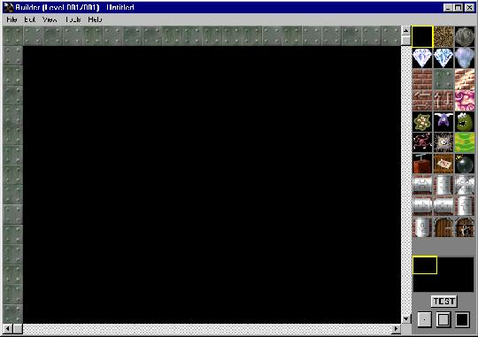

The Digging Jim Builder
Menu
|
Editfield
|
Toolboard
|
Minimap
|
Test/Box Fill buttons

The Builder lets you design your own caves for Digging Jim. Click on the part of the screenshot you want information about.